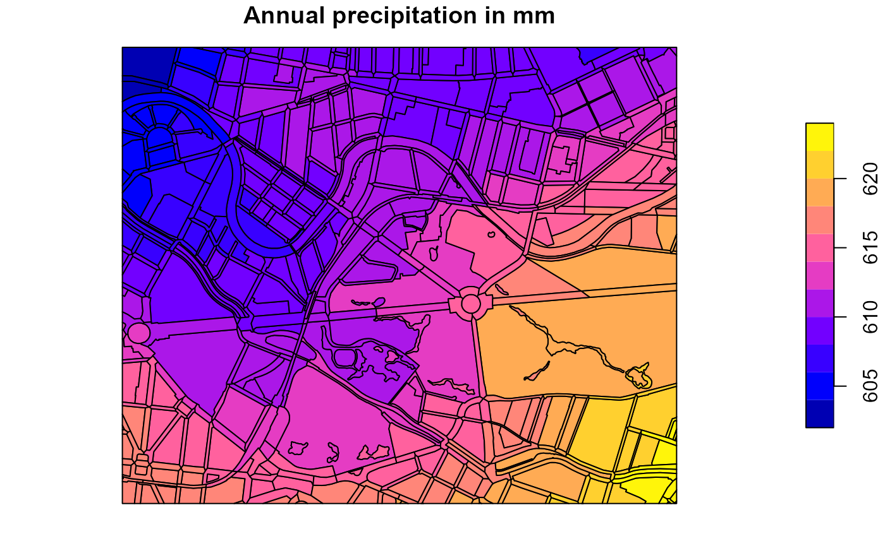

Background
This package provides an R-implementation and extension of the simple water balance model Berlin ABIMO 3.2, which was originally developed by the Federal Institute of Hydrology (Bundesanstalt für Gewässerkunde) for rural areas and later adapted for urban areas, namely for Berlin, Germany. In May 2022, the source code of the model was published on the developer platform GitHub (https://github.com/umweltatlas/abimo).
During the research project AMAREX (an acronym for the German translation of “adaptation of stormwater management to extreme events”), funded by the former German Federal Ministry of Education and Research (Bundesministerium für Bildung und Forschung – BMBF), we, the package authors from Kompetenzzentrum Wasser Berlin gGmbH (KWB) started to work on the original program code, written in the programming language C++ (https://github.com/KWB-R/abimo). We then decided to transfer the model to the programming language R, to rename it to R-Abimo (see e.g. here) and to publish it in the form of this R package kwb.rabimo. Compared to the original model, R-Abimo is more generic (i.e. can be more easily adapted to other cities than Berlin) and it contains some additional features:
- simulation of stormwater management measures (green roofs, swales),
- “conversion” of urban areas to “natural” areas,
- calculation of delta-W, an indicator for the “distance” between the urban (status quo) state and an assumed “natural” state.
Prerequisites
To use the package, you need to have R installed in a version >= 4.3.1. You can download the current version of R from here. Not necessary, but useful is the usage of an Integrated Development Environment (IDE), such as RStudio Desktop that can be downloaded from here.
Installation
In order to install kwb.rabimo directly from our GitHub account KWB-R, we recommend to install the R package remotes first:
# Install package "remotes" from CRAN
install.packages("remotes")You can then install kwb.rabimo either in the latest “official” version:
# Install package "kwb.rabimo" (latest "release") from GitHub
remotes::install_github("KWB-R/kwb.rabimo")or in the latest “development” version:
# Install package "kwb.rabimo" (development version) from GitHub
remotes::install_github("KWB-R/kwb.rabimo@dev", build_vignettes = TRUE)By setting build_vignettes = TRUE you make sure that
this tutorial vignette is installed together with the package. Please
note that this tutorial is currently only available in the “development”
version.
Basic Usage
Provide input data and configuration
Compared to the original C++ version of Abimo we have modified the structures of input data, output data and configuration. For Berlin, Germany, we provide data in the new structures in the package:
# Load Berlin data in the original Abimo format
abimo_inputs <- kwb.rabimo::rabimo_inputs_2025The object abimo_inputs is a list with two elements:
-
abimo_inputs$datais a data frame containing the actual input data. Each row represents a block area and each column represents a block area’s property. -
abimo_inputs$configis a list that configures runoff factors (for runoff calculation) and Bagrov values (for evapotranspiration calculation) for different surface types and the swale evaporation factor that determines which fraction of the water going into a swale becomes evaporation (the rest becomes infiltration).
You may inspect the first rows of the input data with
head(abimo_inputs$data)
#> Simple feature collection with 6 features and 25 fields
#> Geometry type: MULTIPOLYGON
#> Dimension: XY
#> Bounding box: xmin: 389221.4 ymin: 5821678 xmax: 389842.4 ymax: 5822110
#> Projected CRS: ETRS89 / UTM zone 33N
#> code prec_yr prec_s epot_yr epot_s district total_area roof
#> 1 0100980011000100 608 324 666 509 1 4623.972 0.3243243
#> 2 0100980011000200 607 324 666 509 1 13430.944 0.0004668
#> 3 0100980011000300 607 324 666 509 1 5603.764 0.3893303
#> 4 0100980021000200 609 324 666 509 1 34344.730 0.4511181
#> 5 0100980021000300 608 324 666 509 1 48930.206 0.4155595
#> 6 0100980021000400 609 324 666 509 1 13977.561 0.0939597
#> green_roof swg_roof pvd swg_pvd srf1_pvd srf2_pvd srf3_pvd srf4_pvd
#> 1 0.0000 0.86 0.3704374 0.50 0.49 0.46 0.03 0.02
#> 2 0.0000 0.70 0.4371382 0.68 0.31 0.53 0.07 0.09
#> 3 0.0939 0.76 0.4414658 0.55 0.20 0.60 0.10 0.10
#> 4 0.2134 0.94 0.3339549 0.75 0.45 0.28 0.13 0.14
#> 5 0.0277 0.73 0.3574335 0.61 0.42 0.38 0.08 0.12
#> 6 0.0000 0.82 0.4508725 0.78 0.31 0.56 0.01 0.12
#> srf5_pvd to_swale gw_dist ufc30 ufc150 land_type veg_class irrigation
#> 1 0 0 5.9 13 10 urban 9.5 0
#> 2 0 0 5.2 11 10 urban 3.6 0
#> 3 0 0 4.5 13 10 urban 1.5 0
#> 4 0 0 5.4 13 10 urban 5.3 0
#> 5 0 0 5.6 12 10 urban 13.2 50
#> 6 0 0 4.5 11 10 urban 2.7 0
#> block_type
#> 1 10_11_Residential_Free_row_development_with_landscaped_settlement_greenery_1950s_1970s_2_6_stories
#> 2 80_91_Traffic_area_excluding_roads_Parking_lot
#> 3 10_73_Residential_Multi_story_apartment_buildings_of_the_1990s_and_later
#> 4 10_8_Residential_Heterogeneous_inner_city_mixed_development_gap_closure_after_1945
#> 5 50_46_Community_service_Hospital
#> 6 60_32_Suppy_and_disposal_Supply_and_disposal
#> Shape
#> 1 MULTIPOLYGON (((389326.2 58...
#> 2 MULTIPOLYGON (((389262 5821...
#> 3 MULTIPOLYGON (((389262 5821...
#> 4 MULTIPOLYGON (((389382.3 58...
#> 5 MULTIPOLYGON (((389382.3 58...
#> 6 MULTIPOLYGON (((389567.3 58...and you may print the whole configuration object with
print(abimo_inputs$config)
#> $runoff_factors
#> roof surface1 surface2 surface3 surface4 surface5
#> 1.00 0.90 0.70 0.40 0.10 0.48
#>
#> $bagrov_values
#> roof green_roof surface1 surface2 surface3 surface4 surface5
#> 0.05 0.65 0.11 0.11 0.25 0.40 0.25
#>
#> $swale
#> swale_evaporation_factor
#> 0.1Please refer to the help page of rabimo_inputs_2025 for
further information. To open the help page, run
?kwb.rabimo::rabimo_inputs_2025Note: We provide also an object rabimo_inputs_2020, that
refers to an older version of the Berlin data set. It can be used in
almost the same way as rabimo_inputs_2025. However, this
old version does not contain geographic information and we do not cover
it within this tutorial.
Since the we provide the Berlin dataset together with geographical information we can plot the data in forms of maps. In the following we plot
# Load the sf package (simple features) to allow for geographical plotting
library(sf)
#> Linking to GEOS 3.13.1, GDAL 3.11.0, PROJ 9.6.0; sf_use_s2() is TRUE
# Provide a subset of the data representing a zoom into the centre of Berlin
berlin_zoom <- kwb.rabimo::crop_box(
abimo_inputs$data,
xoffset = 0.35,
yoffset = 0.5,
xscale = 0.07,
yscale = 0.07
)
#> Warning: attribute variables are assumed to be spatially constant throughout
#> all geometries
# Plot annual precipitation and annual potential evaporation
plot(berlin_zoom[, c("prec_yr", "epot_yr")])
TODO:
- Plot der Input-Daten ohne Farben (für Visualisierung der Geometrie)
- run_rabimo + Visualisierung der Ergebnisse
- generate_rabimo_area mit default Werten
Run R-Abimo for the status quo
# Run R-Abimo, the R-implementation of Abimo
rabimo_result <- kwb.rabimo::run_rabimo(
data = abimo_inputs$data,
config = abimo_inputs$config
)
# Have a look at the first lines of the result data frame
head(rabimo_result)Run R-Abimo for a natural state scenario
rabimo_result_natural <- kwb.rabimo::run_rabimo(
data = kwb.rabimo::data_to_natural(abimo_inputs$data),
config = new_inputs$config
)Calculate “Delta-W”
For the first ten blocks, calculate the deviation from the natural state:
kwb.rabimo::calculate_delta_w(
urban = rabimo_result[1:10, ],
natural = rabimo_result_natural
)Documentation
Release: https://kwb-r.github.io/kwb.rabimo
Development: https://kwb-r.github.io/kwb.rabimo/dev
Delta-W: Bedeutung + Formel DeltaW data_to_natural + WHH im nat. Referenzszenario berechnen. (evtl. hier Korrektur erforderlich weil Geodaten nicht supported) calculate_delta_w RWBM sehr kurze Intro zu den implementierten RWBM (inkl. dass man den pvd Anteil ändern kann?) wie man gezielt einen Wert in einer bestimmten Spalte (z.B. green_roof) oder in alle Spalten ändert Plot von vorher vs. nachher